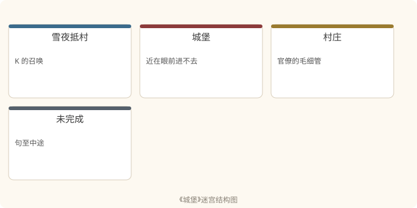

城堡
一、基本信息
| 作者 | 卡夫卡 |
|---|---|
| 成书/出版 | 1926年出版（遗稿，Max Brod 整理——作者页 B049/B022 口径：城堡（1926）） Franz Kafka — Encyclopaedia Britannica（百科全书） |
| 国别/地区 | 奥地利 |
| 时代 | 现当代 · 20世纪 |
| 体裁 | 长篇小说 |
| 语言 | 德语 |

《城堡》迷宫结构图（主题·结构图）
二、创作背景
作者页（B049/B022）：卡夫卡 major_works 载'审判（1925）、城堡（1926）'——身后由布罗德整理出版（作者页定位，详见 bianxingji 条核对）。
'城堡'：K 应召而来的土地测量员，却永远进不去的当局（通说）。
三、内容脉络
K 深夜抵村欲入城堡——永远差一步的抵达（通说）。
村庄与城堡官员：弗丽达、汉斯、老板娘（人物通说待核）。
未完成手稿：句至中途（通说待核）。
四、主要人物表
| 人物 | 身份 | 说明 |
|---|---|---|
| K | 土地测量员 | 永远的外来者 |
| 弗丽达 | 酒馆女侍 | K 的爱人（通说待核） |
五、主题与艺术特点
- 科层制的迷宫（通说）。
- 抵达的不可能性（通说）。
- 罪与自我的追问（通说待核）。
六、影响与评论
- 作者页：卡夫卡遗稿三部曲之一（B049/B022 作者页口径）。
Franz Kafka — Encyclopaedia Britannica（百科全书） - '卡夫卡式'（Kafkaesque）概念的来源之一（通说待核）。
Franz Kafka — Encyclopaedia Britannica（百科全书）
七、阅读建议
难点
- 未完成文本的阅读策略。
- 章序由 Max Brod 编排（考据争议）。
- 《城堡》（上海译文出版社高年生译本，通说待核）。
- 德文原版（公有领域渐近）。
先《变形记》《审判》→ 本作。
八、待核实
- 1926年出版（Die Schmiede出版社说）核对。
- 布罗德编排与原始手稿序（1990年代 Passages 版）待核。
- 弗丽达/汉斯人名核对。
本页主要来源
- Franz Kafka — Encyclopaedia Britannica（百科全书）
- The Metamorphosis (Die Verwandlung) — Encyclopaedia Britannica（百科全书）
卡夫卡的其他收录作品：变形记